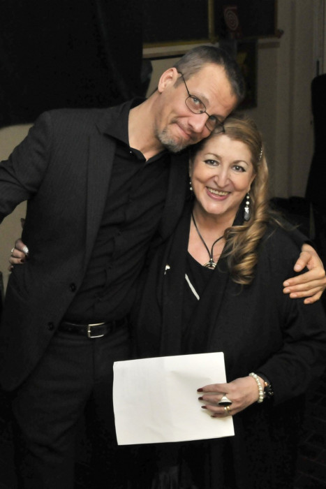
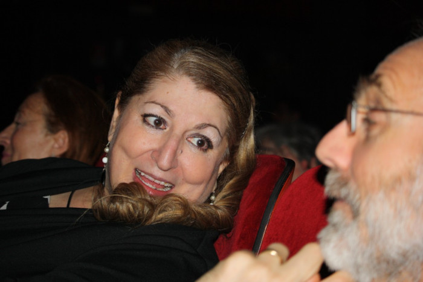

… lo spettacolo finisce … ma resta il desiderio di ricominciare.
E’ difficile lasciare quell’atmosfera magica che fa rivivere, che dilata i tempi, che annulla gli spazi: ieri diventa oggi e domani, il palco ingloba la platea e tutti e tutto concorrono alla celebrazione del Maestro.
Lui è il vero protagonista della serata, presente più che mai nella sua musica, nei suoi personaggi delineati con sincera umanità. La Sua carica sa coinvolgere tutti, fa superare gli individualismi, riesce ad unire verso l’unico obiettivo presente: essere ancora una volta con lui, per lui.
E’ una serata d’Amore che si esprime attraverso i ricordi degli amici, dei compagni di lavoro, attraverso l’attenzione del pubblico e grazie alla bravura di tutti.
Le canzoni si susseguono con ritmi efficacissimi e si alternano a momenti di comicità ricordando il Suo modo autoironico di porsi nei confronti degli altri e delle situazioni.
Il termine “Maestro” risuona come colui che guida verso, che apre la strada agli altri, come colui verso il quale si ha un’immensa ammirazione e riconoscenza.
In questa serata tecnica e passione si sono saldate verso la perfezione.
Silvia Reggiani con Andrea Achilli ed Elena Paoletti
Silvia Reggiani con Andrea Achilli
Non avrei mai creduto sarebbe stato possibile, mettere in scena uno spettacolo così ampio e articolato. Solo la costante ripsota positiva del pubblico e di tutti coloro che ci hanno incontrato, ha permesso di continuare questo atto di estrema riconoscenza verso il tuo Grande Amico.
Giulio
Il messaggio deve arrivare ai cuori prima ancora che alle orecchie, all'anima prima ancora che al cervello.
 Silvia, mentre raccoglie le impressioni del pubblico
E ora i ringraziamenti: